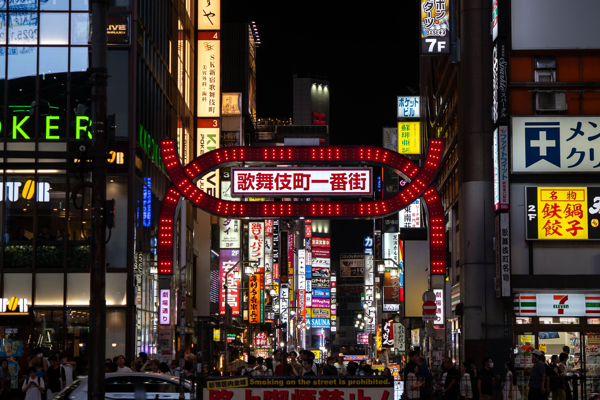
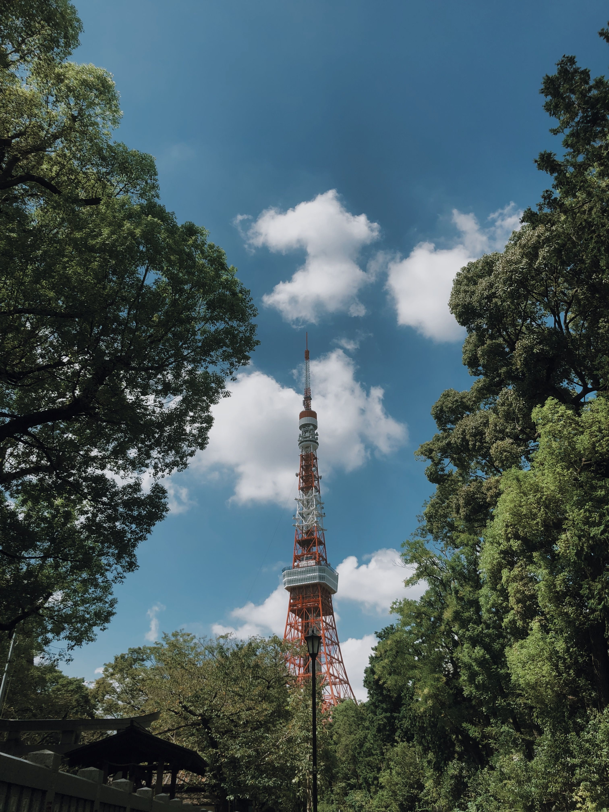

Informação
Alguns dados sobre Tóquio, curiosidades e imagens da cidade.
Dados da cidade
| Demografia | População | ≈ 14 milhões hab |
|---|---|---|
| densidade populacional | ≈ 6400 hab/km2 | |
| Geografia | Área | 2194 km2 |
| Região | Kantō | |
| País | Japão | |
| Website | www.metro.tokyo.lg.jp | |
Curiosidades
- Até 1868, Tóquio chamava-se Edo.
- A estação de Shinjuku é a mais movimentada do mundo, com milhões de passageiros por dia.
- A Tokyo Tower foi inspirada na Torre Eiffel e tem 333 metros de altura.
- A Tokyo Skytree, com 634 metros, é a torre mais alta do mundo.
- Tóquio acolheu os Jogos Olímpicos de Verão duas vezes, em 1964 e em 2021.
